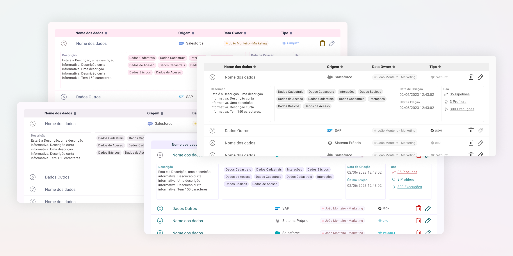
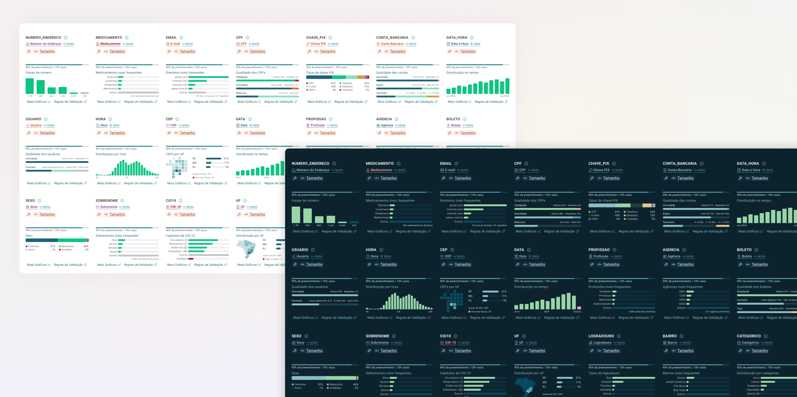
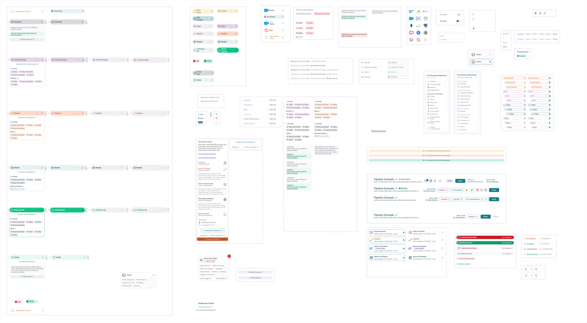
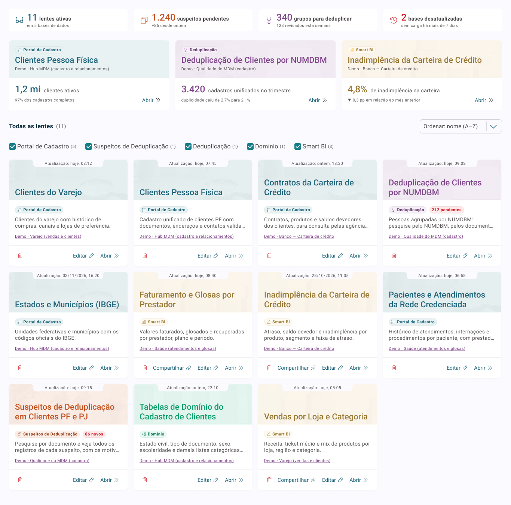
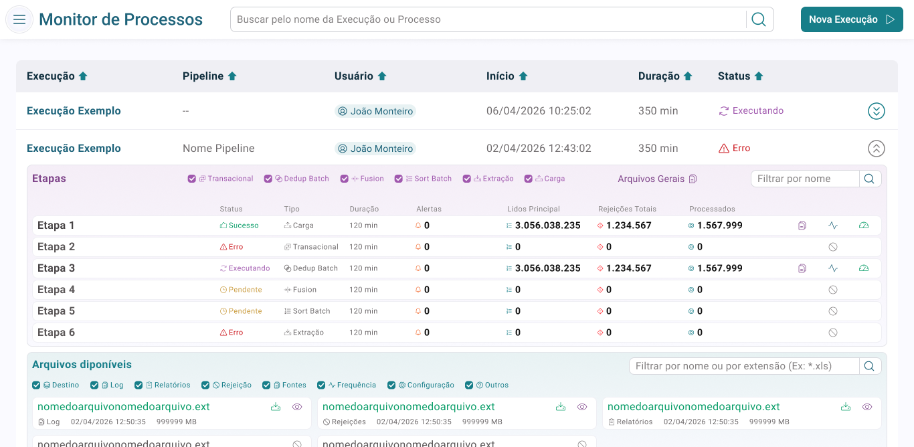
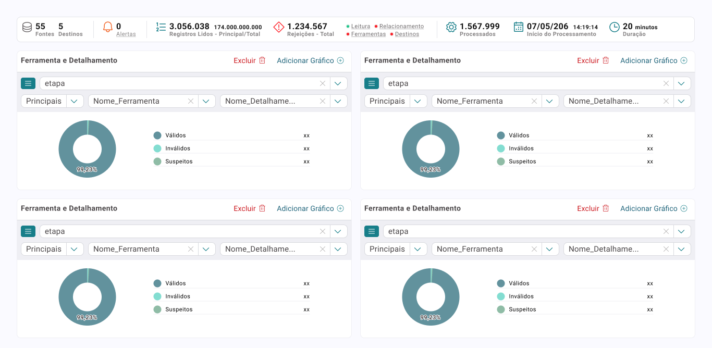

Datacare · Desde 2023
Como os analistas examinam e tratam dados no Datacare
No Datacare, um analista pode examinar uma amostra de uma base com bilhões de registros antes de decidir como tratá-los. Como único designer da plataforma, trabalhei para que ele pudesse reconhecer um problema nos dados e escolher a ferramenta adequada.
A Assesso desenvolveu o Datacare a partir de sua experiência com dados brasileiros, como CPFs e endereços. Entrei no início de 2023 e comecei pela navegação, em parceria com os desenvolvedores e o líder de produto. Testei as propostas com analistas e com pessoas de fora da empresa.
Os analistas trabalhavam em notebooks simples. Usei uma tela de 1366 × 768 pixels como referência e procurei manter os controles principais nos primeiros 668 pixels de altura. Para as tabelas, escolhi um fundo cinza claro pensando na iluminação do escritório. Verifiquei o tamanho das letras e testei o contraste em diferentes modos de cor. Ao explorar o modo escuro, usei a IA para comparar maneiras de adaptar a paleta. Observei como as cores dos gráficos apareciam sobre o fundo escuro para escolher a combinação.
Na tela de análise da amostra, chamada profiler, os gráficos ajudam a identificar o conteúdo de cada coluna. Mantive os indicadores visíveis enquanto o analista percorria as linhas, para que pudesse conferir os registros sem perder a referência. Nos testes, mesmo quem tinha pouca experiência com dados conseguiu distinguir as colunas pelos gráficos.
Depois de examinar a amostra, o analista pode incluir uma ferramenta no pipeline, a sequência de tarefas que trata os dados. Alguns pipelines reuniam dezenas de tarefas. Nos primeiros testes, usar uma cor para cada tarefa dificultou reconhecer sua função. Reservei o roxo para as transformações e o laranja para as etapas que executavam outro pipeline. Mantive o nome e o ícone de cada tarefa. Nos testes seguintes, os participantes distinguiram as categorias com mais facilidade. Ainda estou apurando os resultados no uso cotidiano do produto.
Para ajudar na escolha da ferramenta, desenhei um assistente de IA que resume os problemas encontrados e explica o tratamento que recomenda. Parte da proposta ainda aguarda implementação. Também usei IA no meu trabalho de design. Ao desenhar um painel em que o analista pode investigar perguntas como quais cadastros parecem duplicados, conectei o Claude à biblioteca de componentes que eu havia organizado no Figma.
No primeiro protótipo, o Claude usou cartões onde eu teria escolhido uma tabela com linhas que se expandem. Os cartões ocupavam tanto espaço que alguns controles ficavam fora da primeira tela. Criei um guia para a equipe que implementa as interfaces, com exemplos de quando usar cartões e de quanto espaço deixar entre os elementos. Acrescentei à biblioteca um cabeçalho que mostra onde posicionar a busca e como destacar a ação principal. Por enquanto, sou quem mais usa o guia e ainda estou avaliando seu efeito nos protótipos.
Em um teste, um participante parou para me perguntar quando deveria importar um dado e quando deveria criar um. Enviei a gravação sem áudio ao Claude para descobrir o que ele perceberia só pelas ações na tela. Na primeira análise, ele descreveu a interface como se o participante tivesse visto tudo de uma vez. Mesmo depois de pedir que seguisse a ordem das ações, precisei indicar o que a pessoa já tinha visto e precisava lembrar. Usaria essa análise para descrever os passos do teste. Para entender por que o participante parou, precisei ouvir a pergunta que ele fez.






